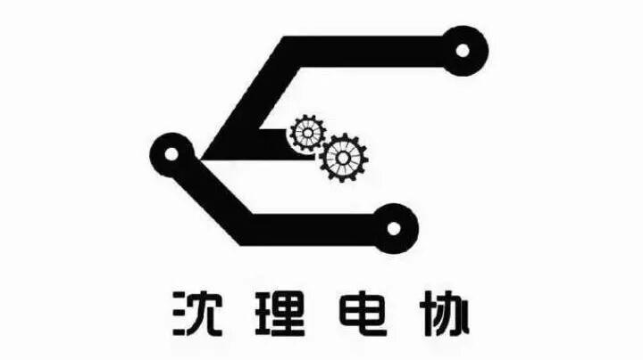
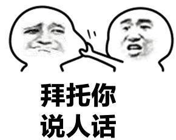
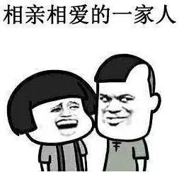
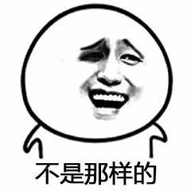
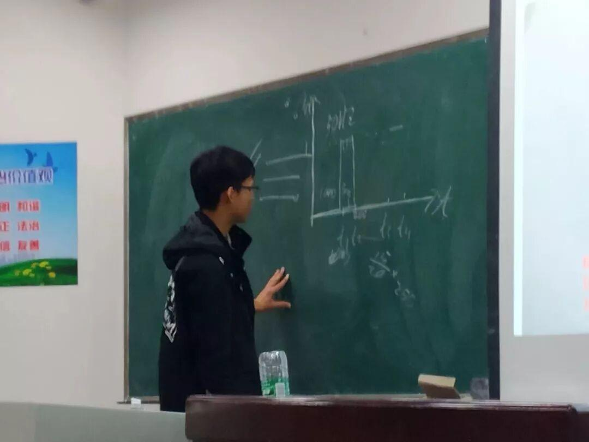

这就是我们，电协！
沈理电协
<< 滑动查看下一张图片 >>
你以为这是科技展览馆吗？或是某某科学家的实验室？不不不！这就是我们，这就是沈阳理工大学电子技术与应用协会！
关于我们

电子技术与应用协会（简称电协）成立于2008年10月，是由校团委社团联合会领导的，一个以学习电子知识为主，培养动手能力的寓教于乐的学术性社团。目前是本校最大，最具影响力的社团之一。
社团以“技术让梦想成为艺术”为信念，服务于广大沈阳理工大学在校生。社团培养了大量具有电子技术实践经历以及相关电子知识的人才，参与参加国家级机器人比赛，同各大高校保持紧密交流，不仅在高校之间的各种大赛中取得了优异成绩，而且为社会上的各个招聘企业输送了大量电子技术人才，有较大社会影响力。

好吧，其实我们就是经常出没在文体中心210的一群“技术宅”！
部门介绍
技术部
分为电控组，机械组和硬件组。
行政部
分为办公室，人事部，财务部，外联部和信息部。
外联部负责筹(la)资(zan)金(zhu)和联谊活动；信息部主管绘制宣传板，宣传视频的制作及整理和日常微信微博平台推送；至于人事部呢，就一句话：沟通与联系；办公室，运筹帷幄的核心，负责活动的策划与构建；财务部就和你们想象的一样，没错，管钱的！
至于技术部，用脚趾头想也知道，没有电控组与机械组的团结合作，一个完美的机器人也是没法完成的。
电协各个部门相互配合，密不可分。

我们的比赛
你以为前不久举办的第五届“理工杯”机器人大赛是我们比赛的最高水准吗？

礼物设计大赛 机器人大赛 | |
辽宁省机器人大赛 电子设计竞赛 大学生课外学术科技作品竞赛 | |
RoboMaster机甲大师赛 |
我们积极参加各项科技类竞赛，荣获国家级一等奖一项，国家级二等奖两项，国家级三等奖五项，省级奖项百余项。
我们的教学


俗话说，独乐乐不如众乐乐，我们不仅要当“技术宅”，还要让更多小朋友成为“技术宅”！所以，我们开展了一波教学。
首先，我们认识了Arduino，然后又在之后的教学中介绍了L298N电驱动机和蓝牙模块等相关知识，让我们的小萌新们拥有了一定的知识储备，并且对电协未来的活动充满期待。
最后，我们电协会和大家一同奋斗，迎接更好的明天！！！
编辑：刘鹏搏